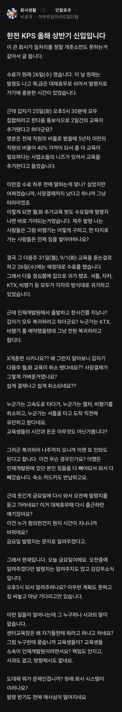

코큽가전

코큽가전
나 코랠 다니는데 코랠 저짓하면 진짜로 얼굴앞에서 패드립 갈길듯
여기 다니는 사람들 피 존나 뜨거움
캡발가전석큽코
ㅋㅋ 입사하자마자 로열티 박살내는 방법~ 입사하자마자 정 떨어져서 이직 준비 할 듯
한전다니시는 분이 지금 한전 예전도 병신인데 지금은 더병신이라고 한 이유가 이거였나 뭐지 ㅋㅋ
한전기공 그러니까 kps는
예전에도 한전 아니었고 한전사번직원들 없음
별개로 한전이든 kps든 공기업들은 다 병신임
그리고 더 병신될 예정
지금은 이직했는데 한전kps에서 5년이상 일했었음.
코로나시기여서 연수도 못받긴했는데 발령받고 3일인가 인터넷 교육 방안에서 혼자 듣다가 사람부족하다고 OH공사 노가다 바로 투입해서 공구도 모르는데 욕먹으면서 노가다 바로 시작함.
한전kps는 전국사업소 하나하나가 다 분위기도 다르고 난이도도 다름. 설비마다, 직렬마다 같은사업소라도 다다름.
진짜 랜덤박스라서 일단 가보고 아니다싶으면 1개월안에 퇴사결정해야함. 입사난이도는 쉬우니깐 들어는 가보는거 추천.
어이 김씨 TM받아
ㅇㄷ로 이짇함 좋은회사업나
전기쟁이는 한전 가공 5발전소 한수원이 그나마 고트아닌가 전거 인국공은 엘리트만 뚫리니 논외로하고
한전도 갔고 발전소도 갔음 .. 더좋은곳없나
자신있음 GS파워 이런데 가야지
법인이 뭐 되게 철두철미하고 그럴거같지?
결국 사람 모여있는곳임 사람냄새 지독함
여러명이서 지랄하는 경우네 ㅋㅋ
차라리 한명이 이랬다저랬다 하는게 낫지
개좆소네
요즘 잘나가는 대기업 빼고는 다 저모양인건가... 대기업중에서도 개좆소만도 못하게 돌아가는 곳 허다하던데
엥? 단체로 감전당했나?
코레일 큽스 가기공 전안공??